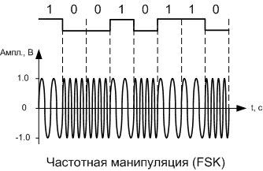

Частотно-манипулированные FSK сигналы одни из самых распространенных в современной цифровой связи. Это обусловлено прежде всего простотой их генерирования и приема, ввиду нечувствительности к начальной фазе.
При частотной манипуляции каждому цифровому символу сопоставляется своя частота несущего сигнала. Амплитуда и фаза манипулированного сигнала не меняются.
На рисунке ниже приведен график двоичной бинарной последовательности нулей и единиц и, соответствующий ему, график частотно-манипулированного сигнала. Низкому уровню бинарного двоичного сигнала соответствует частота 1 КГц, а высокому - частота 0,5 КГц несущего сигнала синусоидального типа.
Принцип формирования частотно-манипулированного сигнала.
Два генератора формируют колебания и на различных частотах. Также имеется соединяющий их электронный ключ, управляемый входным цифровым сигналом, таким образом, что при передаче логической «1» на выход подается сигнал, а при передаче логического «0» - сигнал. Таким образом, частота выходного сигнала «манипулируется» в зависимости от битовой последовательности. Не смотря на простоту приведенной схемы, она на практике не применяется, поскольку требуется очень быстродействующий ключ с минимальным переходным процессом. На практике получила распространение FSK модуляция с непрерывной фазой CPFSK.